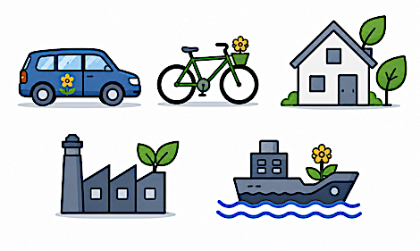

Measure
{kind=link}

Attributes
Attribute Code |
Attribute Name |
SQL DB Data Type |
ReportNet3 Data Type |
Properties |
Code list |
Related table(s) |
In Reporting |
|---|---|---|---|---|---|---|---|
MEA_01 |
CountryCode |
varchar(2) |
string |
PK |
|||
MEA_02 |
MeasureGroupId |
varchar(50) |
string |
PK |
ScenarioMeasure |
||
MEA_03 |
MeasureId |
varchar(50) |
string |
PK |
|||
MEA_20 |
ReportingTime |
datetime |
datetime |
PK |
N |
||
MEA_04 |
MeasureNationalCode |
varchar(50) |
string |
||||
MEA_05 |
MeasureName |
varchar(150) |
string |
||||
MEA_06 |
MeasureClassification |
varchar(50) |
string |
||||
MEA_07 |
MeasureType |
varchar(50) |
string |
||||
MEA_08 |
SourceSector |
varchar(50) |
string |
||||
MEA_09 |
SpatialScale |
varchar(50) |
string |
||||
MEA_10 |
ImplementationBegin |
date |
datetime |
||||
MEA_11 |
ImplementationEnd |
date |
datetime |
||||
MEA_12 |
MeasureCost |
decimal(18,2) |
numeric |
||||
MEA_13 |
FullEffectDate |
date |
datetime |
||||
MEA_14 |
MeasureStatus |
varchar(50) |
string |
||||
MEA_15 |
ReasonIfMeasureNotUsed |
varchar(50) |
string |
||||
MEA_16 |
Deletion |
bit |
boolean |
||||
MEA_21 |
Country |
varchar(20) |
string |
N |
Note
ReportingTime and Country are Reference attributes without a corresponding attribute in the reporting data model.
Attribute details
MEA_01 - CountryCode
Content
Country or territory ISO2 code.
In Reporting
MEA_02 - MeasureGroupId
Content
Identifier of the pollution reduction for measure group, given by data provider.
In Reporting
MEA_03 - MeasureId
Content
Identifier of the pollution reduction measure, given by data provider.
In Reporting
MEA_20 - ReportingTime
Content
Date and time when the information is submitted.
In Reporting
N - No corresponding reporting attribute.
MEA_04 - MeasureNationalCode
Content
Unique local code assigned to the measure by the data provider.
In Reporting
MEA_05 - MeasureName
Content
Name or title of the pollution reduction measure.
In Reporting
MEA_06 - MeasureClassification
Content
Classification of the measure based on regulatory categories.
In Reporting
MEA_07 - MeasureType
Content
Description of the high-level implementation mechanism or scope of the measure.
In Reporting
MEA_08 - SourceSector
Content
Economic or activity sector targeted by the measure (e.g., transport, energy, industry).
Remarks
It can be tested against the SourceSector of SourceApportionment which was used as base for corresponding ScenarioId.
In Reporting
MEA_09 - SpatialScale
Content
Geographical coverage of the measure (e.g., local, national, EU-wide).
Remarks
It can be tested against the SpatialScale of SourceApportionment which was used as base for corresponding ScenarioId.
In Reporting
MEA_10 - ImplementationBegin
Content
Start date for implementing the measure.
In Reporting
MEA_11 - ImplementationEnd
Content
End date for implementing the measure.
In Reporting
MEA_12 - MeasureCost
Content
Estimated costs for implementing the measure over its lifetime.
In Reporting
MEA_13 - FullEffectDate
Content
Date when the measure is expected to reach its full impact.
In Reporting
MEA_14 - MeasureStatus
Content
Current status of the measure (e.g., planned, in progress, completed).
In Reporting
MEA_15 - ReasonIfMeasureNotUsed
Content
Explanation or justification if the measure was not implemented.
In Reporting
MEA_16 - Deletion
Content
Flag to indicate that this element must be deleted.
Remarks
Y/N
In Reporting
MEA_21 - Country
Content
Name of the country.
In Reporting
N - No corresponding reporting attribute.